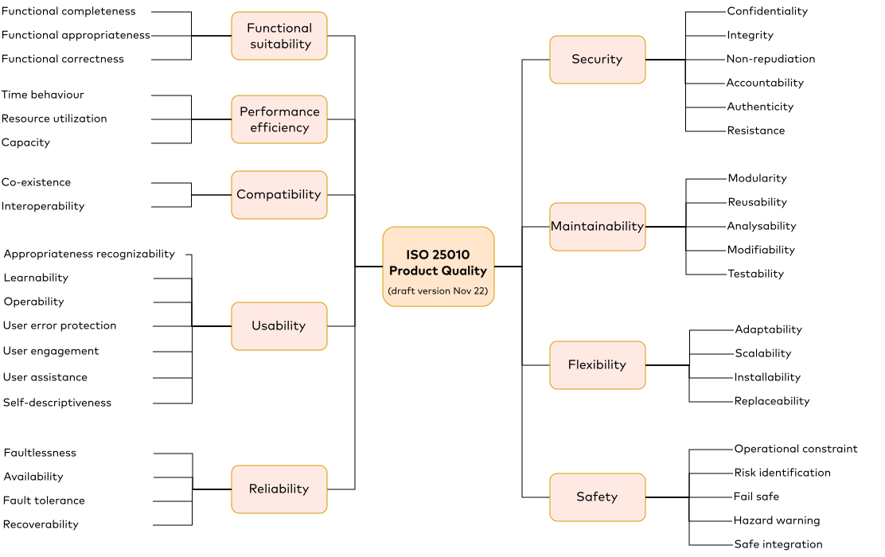

A short overview of possible NFRs.
- Functional requirements specify what the system should do. E.g. “Display the last user ID that logged into the system.”
- Non-functional requirements specify how the system should be. E.g. “The system should be secure against code injection attacks.”
NFRs have many different names and can be classified according to different hierarchies/dimensions. According to ISO/IEC 25010: 
However, some categories seem very related (compatibility & portability), some popular terms are missing (sustainability, transparancy, safety, privacy) and the overview does not provide definitions. The following list/tree is an attempt to give some concise structure to NFRs but different projects might prefer different structures. Further NFR overviews can be found on Wikipedia.
🛴 Efficiency: Consume few resources to produce/operate.
This can be distinguished according to the resource type:
- 🕑 Time:
- ⏳ Latency: Time to respond to one request.
- 🚿 Throughput: Maximum amount of processed requests per time interval.
- ⬜ Space:
- 💾 Storage: How much data is stored?
- ✉ Message: How much data is transmitted?
- ⚡ Energy: How much energy is required to produce/operate?
- 💰 Cost: How much money is required to produce/operate?
⛓ Reliability: Ensure system remains operational.
- 🌐 Availability: Avoid and mitigate failures to increase “uptime”.
- 🛡 Robustness: Do not crash on unexpected requests.
- 🪂 Fault Tolerance / Redundancy / Resilience: Recover from failures.
- 📈 Scalability: Handle increased load and avoid stalling/dropping requests.
- 🔒 Security: Avoid and mitigate misuse/tampering.
- 👁🗨 Confidentiality: data should not be revealed to unintended recipients.
- ✂ Integrity: data should not be changed during transmission.
- 🛂 Authenticity: data must originate from the correct entity.
🔧 Universality/Flexibility: How many problems can the system solve?
- 💱 Interoperability/Compatibility: Ability to interact with other systems.
- 🧳 Portability/Adaptability: Ability to operate in different environments.
- ♻ Reuseability: Ability to reuse parts for other systems.
- 📈 Scalability: Ability to scale efficiently with growing input.
🚧 Maintainability: How easy can a system be repaired/modified?
- 🎲 Determinism / Testability: Ability to reproduce behavior.
- 🔍 Transparency / Verifiability: Ability to analyze behavior.
- 🧩 Modularity: Separation into independent parts to lower complexity.
- ➕ Extensibility: How easy can the system be extended?
- 📖 Documentation: How well is the system documented?
👥 Usability: How easy can the system be used?
- ▶ Simplicity/Learnability: How intuitive is the system?
- 🌍 Localization: Available and adapted to many languages/locations.
- ♿ Accessibility
⚖️ Compliance (Trustability?):
This section is not well-defined yet. Some of these points might better fit somewhere else.
- 🌱 Sustainability: Minimizing negative impact on the environment, society and economy
- 🎭 Privacy / GDPR / SSI: Ability to self-manage/protect personal data. Users cannot be identified.
- 👉 Accountability: Ability to trace actions uniquely to each entity/agent.
- ⛑ Safety: Protect users against harmful conditions or events.
- 📝 Standardization: Rely on well-defined components and processes.
✔ Correctness:
This section might be related to functional requirements.
- 🎯 Accuracy: Response should be close to true value. Related to Precision/Resolution.
- 🔬 Sensitivity: System should detect weak inputs.
- ⏱ Freshness: Response should be recent.